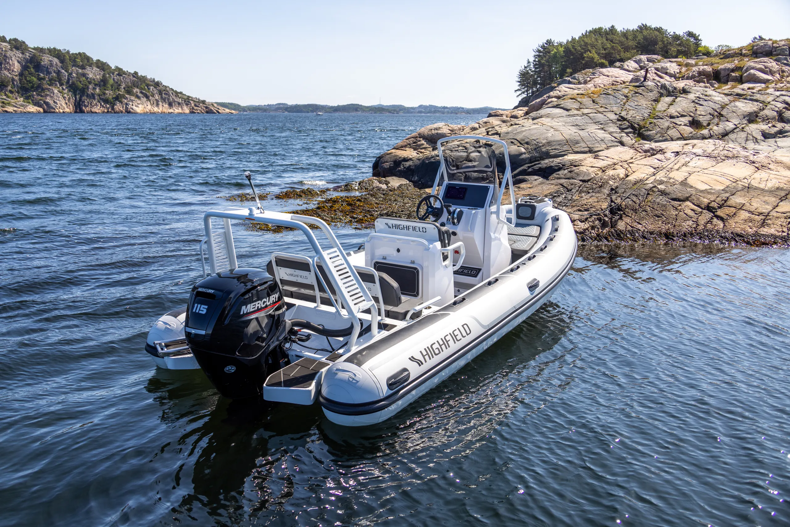
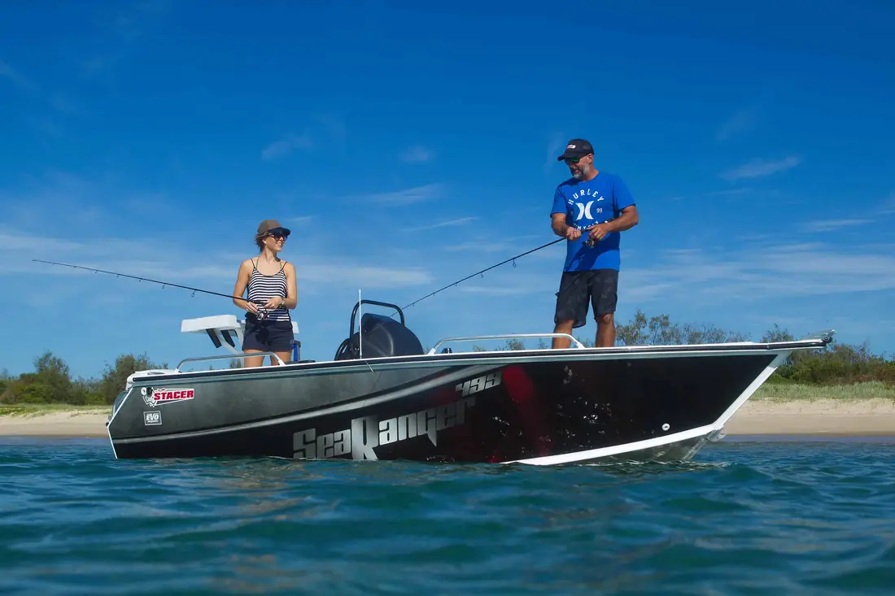

Highfield Sport 560 · quote 20261031-01 · the maker’s photograph, 2,560 × 1,708
560

Photographed with a Mercury outboard. Your boat’s finish and motor are as quoted.
Your boat
Highfield Sport 560
Hypalon · White / White / White/Blue
Length overall 5.66 m Beam 2.5 m Power 90–115 hp Boat weight 581 kg
With your boat
Motor Yamaha F90XB
Trailer REDCO Custom / Highfield Sport 560 Aluminium
Dealer fit 2 x MFM50 Batteries
Total, including GST
$73,992
Includes the motor’s pre-delivery and the trailer’s registration.
Stacer 499 Sea Ranger SDF (Centre Console) · quote 20261031-02 · the row’s own photograph, 1,100 × 733
499

Your boat
Stacer 499 Sea Ranger SDF (Centre Console)
Hull length 5.05 m Beam 2.24 m Power 50–90 hp Hull weight (dry) 542 kg
With your boat
Dealer fit Striker Vivid 4cv w GT20-TM Transducer Garmin GA38 GPS/Glonass Antenna Garmin NMEA Backbone/Drop Cable · 2mtr
Total, including GST
$30,243
Includes GST of $2,749.36 at 10%.
What only this one does
It names everything on the quote on its cover: the motor, the trailer and each dealer-fit item, by kind, under the boat. It is the only one that keeps the recorded ruling: nothing bleeds, every word is on white, and an office printer loses nothing. It prints the sharpest photograph, with the most held pixels behind each printed one.
The picture, measured on the sheet
picture box drawn held px per CSS px prints at SP560, 2,560 × 1,708 658 × 370 658 × 439 3.89 374 dpi Stacer 499, 1,100 × 733 658 × 370 658 × 438 1.67 161 dpi Stacer 529, 1,024 × 676 658 × 370 658 × 434 1.56 149 dpi
The rule: the full 174 mm measure, square-edged like a print in a book, cut 16 : 9 from its top and foot only. The boat keeps its whole length. That is 27% of the page, the least of the three: B spends the room on the configuration.
With a 1,024 px photograph
Exactly the spec’s band: 658 × 370, 1.56 held pixels to each CSS pixel, 149 dpi (the-1024-photograph.html). Nothing about B changes with the picture’s size.
How it reflows
390 × 844: the digits step down to 104px and stand whole under the reference, the photograph spans the phone’s measure, each “with your boat” row stacks its kind over its item, and the total stands under who it is for.844 × 390 and up: the A4 sheet at 1:1.The PDF on a phone at 0.49: the name 31px, the total 24px.
What Northside replaces
The photograph is the gallery’s cover. The digits are the accent at 13%, so they are always Northside’s colour, faint. B works with a studio render, which multiplies into the white as today’s plate does. With no picture it is the digits and the name alone, Porsche without the car. A name with no digits simply has no numeral. The digits are the first run of figures in the model’s own name, a pure derivation if built.
Type
Digits 224px/600 at the accent’s 13%. Name 64px/300 (48px with a bracket). Finish 16px. Facts as one line at 13px, the spec’s §3.4 form. List 13px, kinds in quiet ink at a fixed 120px indent. Customer 26px, total 48px/300.
Motion, keys, reduced motion
The build’s photograph lands in the print frame on the 588ms spring and the digits do not move. Print and reduced motion: still. The digits are aria-hidden, because the name says them.
References no earlier board used
docs/research/refs/document/live/saxdor-specs-crop.png: facts as label over value in wide air, no rules.C:\Users\Asaf\dev\hl-refs\ref\porsche-pdf-1.png: the ghosted “911”. The document screen’s row already names Porsche’s PDF as a whole, so this is the genre. B takes one device from that frame.
Honest constraints
The dealer-fit names print as page 2 prints them (“w”, “· 2mtr”: critique minor 20). The cover never says an item differently from its line.
The SP560 photograph is the machine’s choice (person: false), refused by the paper’s reader until a person marks it. The Mercury caption is from the ledger.
R. Kelleher is the walks’ name. The figures are the given PDFs in docs/directions/paper-quote/. No validity date and no address print: Settings holds none.